Describe antes de etiquetar
Empieza por la lesión primaria predominante y añade lo que la modifica. “Rash” no permite comparar, consultar ni comprobar si el cuadro progresa.
“En tronco y raíces de miembros, múltiples máculo-pápulas eritematosas de 3–8 mm, simétricas y confluentes, de bordes poco definidos, sin ampollas ni erosiones; mucosas respetadas y piel no dolorosa”. Después añade cronología, fármacos y estado general.
La cronología y el contexto reducen el diagnóstico diferencial
Una lesión aislada de su historia se parece a demasiadas cosas. Fecha, velocidad, síntomas, exposiciones y medicación convierten la morfología en una hipótesis útil.
Cuándo apareció la primera lesión, dónde empezó, cómo se extendió y qué aspecto tenía antes de rascarse, romperse o tratarse.
Prurito, dolor, escozor o ausencia de síntomas. La piel dolorosa con fiebre, tono violáceo, mucosas o despegamiento exige otra prioridad.
Trabajo, aficiones, sol, viaje, medio rural, animales, convivientes afectados, contacto sexual y productos aplicados en la piel.
Fármacos prescritos, sin receta, suplementos y productos naturales; anota inicio, retirada, reintroducción y tratamientos ya probados.
Antecedentes que orientan
- Atopia, psoriasis, enfermedad autoinmune, neoplasia o inmunosupresión.
- Dermatosis similares previas y respuesta al tratamiento.
- Historia personal y familiar de cáncer cutáneo o lesiones pigmentadas cambiantes.
- Quemaduras solares, exposición acumulada y uso de cabinas de bronceado.
Exploración que no se recorta
- Superficie cutánea suficiente para entender la distribución, respetando intimidad y consentimiento.
- Cuero cabelludo, pelo, uñas y mucosas cuando el cuadro lo requiera.
- Adenopatías y exploración general si hay fiebre, afectación sistémica, infección o sospecha tumoral.
- En piel muy pigmentada, apóyate más en palpación, temperatura, edema y cambio respecto a la piel vecina.
Primarias: lo que nace sobre piel previamente normal
Los límites de tamaño cambian ligeramente entre atlas. No fuerces una categoría: mide en milímetros o centímetros y registra profundidad, contenido y consistencia.
| Lesión | Qué es | Pregunta que la separa |
|---|---|---|
| Mácula / parche | Cambio de color plano, no palpable; “parche” señala una extensión mayor. | ¿Se blanquea a la presión o persiste como púrpura/pigmento? |
| Pápula | Elevación sólida y superficial, pequeña y circunscrita. | ¿Es realmente sólida o contiene líquido? |
| Placa | Elevación amplia en meseta, a menudo por confluencia de pápulas. | ¿Tiene escama, infiltración, borde activo o aclaramiento central? |
| Nódulo | Lesión sólida con componente dérmico o subcutáneo profundo. | ¿Es móvil, adherida, dolorosa, caliente o fluctuante? |
| Habón | Elevación por edema dérmico, pruriginosa y evanescente. | ¿Cada lesión individual desaparece antes de 24 horas sin dejar marca? |
| Vesícula / ampolla | Cavidad con líquido claro; el recopilatorio y el manual BAD usan 5 mm como corte práctico entre ambas. | ¿Es tensa o flácida, dolorosa o pruriginosa, y afecta mucosas? |
| Pústula | Contenido blanquecino o amarillento; puede ser folicular o no folicular. | ¿Está centrada en pelo? Pus no equivale siempre a infección. |
| Quiste / absceso | Cavidad encapsulada frente a colección purulenta en dermis o tejido subcutáneo. | ¿Hay fluctuación, calor, dolor, punto central o signos sistémicos? |
Atlas visual de lesiones primarias
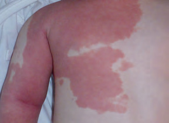
Cambio de color sin relieve: malformación capilar.
Recopilación Dermatología 2025 · pág. 6.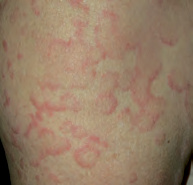
Elevación edematosa arciforme; confirma su evanescencia.
Recopilación Dermatología 2025 · pág. 6.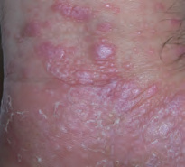
Poligonales, planas y con brillo liquenoide en liquen plano.
Recopilación Dermatología 2025 · pág. 6.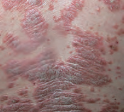
Meseta eritematosa bien delimitada con escama nacarada.
Recopilación Dermatología 2025 · pág. 6.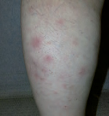
Lesiones profundas eritematosas en una paniculitis.
Recopilación Dermatología 2025 · pág. 6.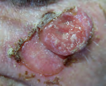
Lesión sólida exofítica: carcinoma basocelular nodular.
Recopilación Dermatología 2025 · pág. 6.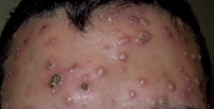
Pequeñas cavidades con líquido claro en varicela.
Recopilación Dermatología 2025 · pág. 7.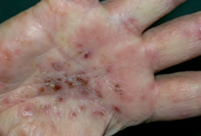
Contenido purulento y costras en un eczema crónico de manos.
Recopilación Dermatología 2025 · pág. 7.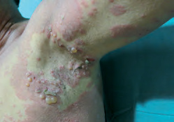
Techo conservado sobre base urticariforme en penfigoide.
Recopilación Dermatología 2025 · pág. 7.Secundarias: evolución, rascado, rotura o reparación
Una costra o una erosión puede ocultar la lesión inicial. Pregunta cómo empezó y busca lesiones más recientes en otra zona.
Láminas de estrato córneo que se desprenden. Describe si son finas, gruesas, grasas, secas o en collarete.
Suero, sangre, células o microorganismos desecados. “Melicérica” describe color miel, no sustituye el diagnóstico.
La erosión es superficial; la fisura es lineal y dolorosa; la úlcera pierde epidermis y dermis y deja cicatriz.
La excoriación pierde epidermis por trauma; la liquenificación engrosa la piel y acentúa sus líneas.
Tejido necrótico adherido, a menudo oscuro. El dolor desproporcionado o la progresión rápida obligan a descartar infección profunda.
Registra pérdida de grosor, tejido fibroso, endurecimiento y si la piel se puede pellizcar o desplazar.
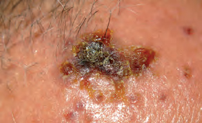
Exudado seco serohemático y melicérico sobre una erosión.
Recopilación Dermatología 2025 · pág. 7.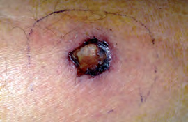
Pérdida de epidermis y dermis con borde violáceo elevado.
Recopilación Dermatología 2025 · pág. 7.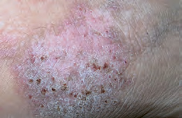
Engrosamiento y líneas marcadas por rascado crónico.
Recopilación Dermatología 2025 · pág. 8.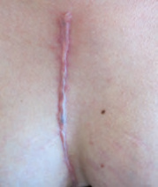
Tejido elevado limitado al trayecto de la esternotomía.
Recopilación Dermatología 2025 · pág. 8.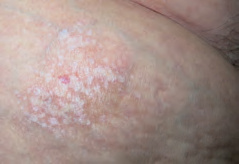
Placa blanquecina y adelgazada en liquen escleroso extragenital.
Recopilación Dermatología 2025 · pág. 8.Distribución y configuración estrechan el diagnóstico
“Generalizado” informa de extensión; “simétrico, flexural y confluente” aporta una geometría que sí se puede comparar.
| Patrón | Cómo reconocerlo | Ejemplo orientativo |
|---|---|---|
| Flexural / extensor | Predominio en pliegues frente a codos, rodillas y caras extensoras. | Eczema flexural; psoriasis extensora. |
| Dermatomérico | Banda unilateral en territorio nervioso, habitualmente sin cruzar la línea media. | Herpes zóster. |
| Anular / arciforme / policíclico | Anillo, arco o círculos que se intersecan. | Tiña, urticaria y eritemas figurados. |
| Herpetiforme | Vesículas o pápulas agrupadas en racimo. | Herpes simple; no significa por sí solo etiología herpética. |
| Lineal / Koebner | Lesiones siguiendo roce, rascado o traumatismo. | Psoriasis, liquen plano o dermatitis de contacto. |
| Fotoexpuesto | Cara, escote y dorso de manos con respeto relativo de zonas cubiertas o pliegues. | Fototoxicidad, fotoalergia o enfermedad autoinmune. |
| Reticulado | Malla violácea o eritematosa. | Livedo; relaciona con temperatura, persistencia y síntomas sistémicos. |
| Confluente / diseminado | Lesiones que se unen frente a elementos separados por piel sana. | Toxicodermia frente a varicela dispersa. |
Presiona y palpa: el color aislado engaña
La inspección cambia con el fototipo y la iluminación. La respuesta a la presión y la palpación añaden información vascular y de profundidad.
Vitropresión
El eritema por vasodilatación suele blanquear. La sangre extravasada no: petequias, equimosis y otras formas de púrpura persisten. Una púrpura palpable, necrosis, fiebre o deterioro sistémico no se reduce a “una mancha”.
Palpación
Describe superficie, consistencia, movilidad, temperatura y dolor. En piel pigmentada, edema, calor, induración y textura pueden hacer visible clínicamente una inflamación cuyo eritema es sutil.
- No describas solo el color: “rojo” puede ser eritema, púrpura, vaso superficial o inflamación sobre otro fototipo.
- No rompas todas las ampollas para explorar: localiza una lesión reciente e intacta si puede requerir biopsia o inmunofluorescencia.
- No confundas costra con lesión primaria: busca el borde activo o una lesión más joven.
- No minimices dolor: piel dolorosa, necrosis, progresión rápida o dolor desproporcionado son señales de alarma.
La mayoría de cuadros no necesita un panel indiscriminado
Elige la prueba que puede confirmar la hipótesis o cambiar el manejo. Si la toma exige una lesión concreta, decide el sitio antes de tratar o destruir la muestra.
| Prueba | Muestra útil | Cuándo aporta |
|---|---|---|
| Raspado + KOH | Escama del borde activo, detritus subungueal distal o pelos afectados. | Sospecha de dermatofitosis u otra micosis superficial. |
| Cultivo bacteriano | Pus profundo o aspirado de colección cuando sea posible; evita una torunda superficial sin objetivo. | Infección purulenta, fracaso, recurrencia o contexto que cambie la cobertura. |
| Biopsia para histología | Lesión activa y representativa; la profundidad depende de la hipótesis. | Tumor, dermatosis inflamatoria atípica, vasculitis, paniculitis o diagnóstico incierto. |
| Inmunofluorescencia directa | Piel perilesional sana, no el centro erosionado; coordina recipiente y transporte. | Sospecha de enfermedad ampollosa autoinmune o algunos procesos inmunológicos. |
| Analítica dirigida | Hemograma, función renal/hepática, orina u otros estudios según el órgano sospechado. | Fiebre, toxicodermia, vasculitis, prurito sistémico o afectación extracutánea. |
| Dermatoscopia | Lesión sin manipular, examinada por personal entrenado. | Lesión pigmentada, vascular, escabiosis y otros patrones; complementa, no reemplaza, la clínica. |
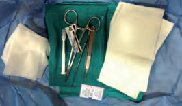
Material básico para obtener, cerrar e identificar correctamente la muestra.
Recopilación Dermatología 2025 · pág. 9.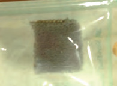
Muestreo de hongos sobre una superficie cutánea amplia.
Recopilación Dermatología 2025 · pág. 9.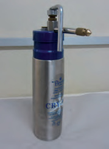
Aplicador de nitrógeno líquido; no sustituye la confirmación diagnóstica previa.
Recopilación Dermatología 2025 · pág. 9.Muchas veces se necesitan dos muestras: una lesión para histología y piel perilesional intacta para inmunofluorescencia directa. Si existe duda, habla con Dermatología y Anatomía Patológica antes de infiltrar, erosionar o fijar la muestra equivocada.
Registra lo que permitirá reconocer progresión
Una buena nota no intenta sonar dermatológica: fija un punto de comparación y deja claro qué hallazgos obligan a cambiar de circuito.
Localización, lesión primaria, tamaño, color, borde, superficie, distribución y palpación.
Diámetro mayor de una lesión focal o estimación de superficie si el cuadro es extenso.
Inicio, progresión, síntomas, medicación y respuesta a medidas previas.
Dolor cutáneo, fiebre, mucosas, ampollas, despegamiento, púrpura, necrosis y afectación sistémica.
Piel dolorosa, erosiones en varias mucosas, ampollas extensas, despegamiento, púrpura con mal estado, necrosis, progresión rápida, edema facial con fiebre o datos de órgano interno: consulta la guía de enfermedades ampollares y toxicodermias.
Referencias utilizadas
Referencias para el método de exploración, el vocabulario y las imágenes.
- British Association of Dermatologists. Dermatology: handbook for medical students & junior doctors, 3rd edition. Apartados “Essential clinical skills” y “Communicating examination findings”.
- Actualización Dermatología 2025 - Recopilación, capítulo 1: “Lesiones en dermatología clínica”. Material local proporcionado; utilizado como fuente secundaria.